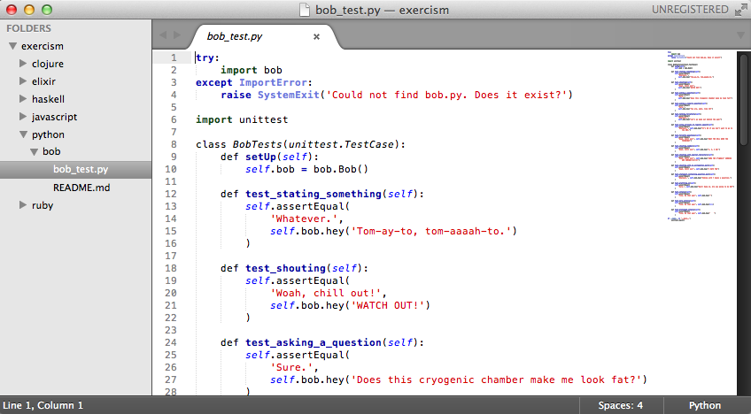
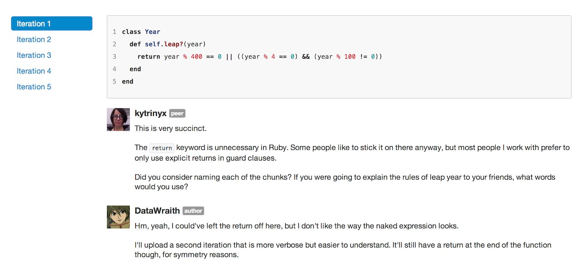

The content here is really sketchy'd-out still, still working on this.
The changes being made on this site are informed by user research, see https://github.com/exercism/website/issues/14
Exercism = Exercise + Exorcism

Fetch the current exercises using the command-line client. Exercises consisting of a test suite and a README, in one of the languages listed to the right.
Write code using your usual tools. Make the tests pass. Keep the code as simple, readable, and expressive as you can.
Submit the code to the website. Other people who have completed the same assignment provide a code review, ask questions, and discuss trade-offs with you.
Based on their comments, revise your code and resubmit.
what languages ! what testing frameworks ? how do I get started with language x? how long do people spend on an exercise? (like 5 min or 5 days?) how many “iterations” are gone through often? (range?)

from who? are they nice? what does it look/feel like? formal communities/groups are optional but cool What do they look like? How do I find one? (are they discoverable from the site? maybe not right now.)
Think deeply about how code can be improved.
One particularly well-kept secret is that looking at someone's code with an eye towards finding ways of improving it can teach you more about writing readable code than receiving feedback on your own code.
Doing this forces you to think about why you make the trade-offs that you do, what in the code you are reacting to, why you are reacting to it, and how you might improve it.
There is rarely only one good solution to a problem. Asking questions and articulating your thoughts about these small problems can change your thinking about the issues you face in the code bases you work in on a day-to-day basis.
Command line tool => go to exercise folder Readme + tests; run the tests TDD to write working code first draft encourage them to submit this first draft for reference, knowing it’s raw and unrefactored and that’s expected! should we / do we suggest that? Refactor the code (do we link to refactoring techniques already?) submit the revision (!!) (bonus! is there a command line shortcut to open the website to the exercise we’re working on? that’d be sweeeet)
After submitting your code, check out other peoples’ solutions, give them feedback (this is great time for it, while you’re thinking about it!) website can auto-suggest this? (I bet it does already!) Different option: Dashboard of open exercises that are already completed
Here's how it works: 1. You fetch some challenges in the form of README documents. These include associated test suites 2. Then write code in order to make the tests pass 3. Submit the code and begin the conversation with others
By repeating this process you will: 1. Share while discussing how YOU solved the problem 2. Learn from others as you discover how they solved the same problem 3. Gain experience through repeated practice solving problems